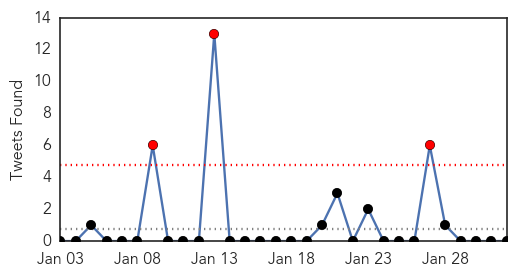
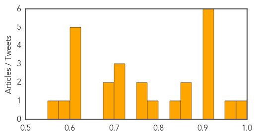
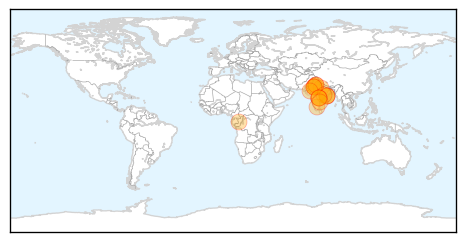

Unknown
30-Day Web Trend
0 alerts, 0 warnings

30-Day Twitter Trend
3 alerts, 0 warnings

Article Locations


Article Confidences
Top Articles:
- 0.984
- Number of Bird Flu Cases in China's Guangdong Province Reaches 30
- 0.967
- Finally CDC Have Issued A Flu Vaccine Apology
- 0.917
- Chicago Tribune
- 0.917
- Chicago Tribune
- 0.917
- Chicago Tribune
- 0.917
- Chicago Tribune
- 0.910
- 9 tips to prevent the flu during pregnancy
- 0.910
- The world windows to Thailand
- 0.866
- Two bombs explode outside luxury Bangkok mall, no injuries -Thai police
- 0.866
- Al Jazeera journalist Mohamed Fahmy expected to be released from Egypt jail soon
- 0.845
- Enterovirus may be linked to paralysis in 12 Colorado children, study finds
- 0.787
- Health horror for tiny town as six people hit by mystery rare disease
- 0.760
- Kennesaw State University reports TB case in student, TST testing scheduled for Tuesday
- 0.753
- Eliminating Leprosy Needs Renewed Efforts, Greater Push
- 0.713
- 'Atypical' case of mad cow disease confirmed in Norway
- 0.702
- OPEN LETTER: Response to Minister Motsoaledi’s statement on forensic labs (DA
- 0.702
- Nurhi Donates Vehicle to Edo Health Ministry
- 0.698
- S. Korea reports another suspected foot-and-mouth case among cattle
- 0.691
- Investigation launched into suspected cluster of rare disease which may have struck down six victims in ONE tiny town
- 0.604
- South Sudan president and rebel leader sign ceasefire deal
- 0.604
- Japan in shock as IS group claims killing of Kenji Goto
- 0.604
- French nostalgic for DSK despite pimping charges
- 0.604
- Egypt deports jailed Al-Jazeera journalist back to Australia
- 0.604
- Boko Haram, Nigerian troops battle for control of Maiduguri
- 0.592
- Decline in leprosy cases across the Caribbean
- 0.558
- Three new polio cases reported - Pakistan
Top Tweets:
-
No tweets found for Feb 01, 2015
Swine Flu
30-Day Web Trend
8 alerts, 5 warnings

30-Day Twitter Trend
0 alerts, 0 warnings

Article Locations
Article Confidences

Top Articles:
- 1.000
- Swine flu in India: 3 people die in Telangana and 1 in Andhra Pradesh from H1N1
- 0.998
- Swine flu claims first victim in Odisha
- 0.998
- Former Rajasthan CM Ashok Gehlot down with swine flu
- 0.998
- 24x7 treatment for swine flu patients at SMS Hospital now
- 0.998
- Fresh case, swine flu tally in city 20
- 0.997
- Swine flu claims first victim in Odisha
- 0.997
- Nine more die of swine flu in Rajasthan, toll mounts to 48
- 0.997
- Gujarat: 39 new swine flu cases in a day, state toll rises to 38
- 0.996
- Swine flu in India: One tested positive for H1N1 in Odisha, total cases rise to 4
- 0.996
- 39 New Swine Flu Cases in a Day, State Toll Rises to 38
- 0.995
- Swine flu claims first victim in Odisha; man dies at SCB
- 0.993
- Former Rajasthan Chief Minister Ashok Gehlot Gets Swine Flu, Hits Out at the State Government
- 0.992
- Rajasthan ex-CM Gehlot tests positive for swine flu
- 0.992
- Former Rajasthan CM Ashok Gehlot tests positive for swine flu
- 0.990
- 32 tested positive for swine flu in AP
- 0.990
- Former Raj CM Ashok Gehlot tests positive for swine flu
- 0.989
- Swine Flu Claims First Life in Bhubaneswar This Year
- 0.989
- Former Rajasthan CM Ashok Gehlot tests positive for swine flu : India, News
- 0.987
- Woman dies of swine flu at PGI
- 0.985
- Gehlot tests positive for swine flu, recovering
- 0.974
- One more swine flu case found in Odisha
- 0.974
- One more swine flu case found in Odisha
- 0.969
- Odisha Reports First Swine Flu Death of the Year
- 0.962
- NIV Testing AP, TS Patients for H1N2, H2N3 Strains Too
Top Tweets:
-
No tweets found for Feb 01, 2015